[netcore]CentOS安装使用.netcore极简教程（免费提供学习服务器）
本文目标是指引从未使用过Linux的.Neter，如何在CentOS7上安装.Net Core环境，以及部署.Net Core应用。
仅针对CentOS，其它Linux系统类似，命令环节稍加调整；
需要提前准备好服务器地址、用户名、密码；
如果手上没有Linux系统，可使用新生命团队免费提供的公网服务器 centos.newlifex.com
新生命团队netcore服务器免费开放计划
一、准备工作
在Windows开发机上安装 xshell 和 xftp ，前者用于SSH连接Linux服务器，后者用于FTP上传下载文件。
打开xshell，新建连接，名称和主机都填 centos.newlifex.com ，（实际应用中就是你的Linux服务器地址或域名），其它默认，如下：
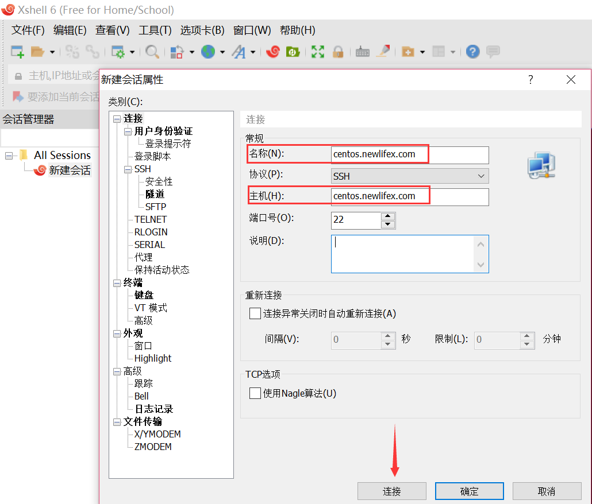
点击连接，弹出一个SSH安全警告，需要接受并保存SSH密钥。
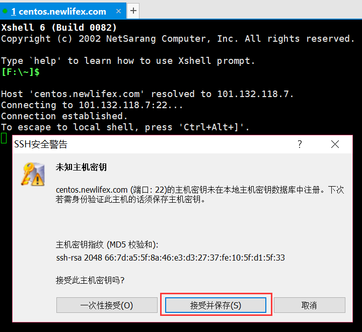
接受后要求输入用户名，我们这里输入root，选择记住用户名
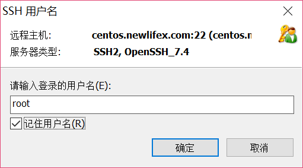
确定后，要求输入密码，新生命团队开放服务器本周的密码是 nx@1250407685
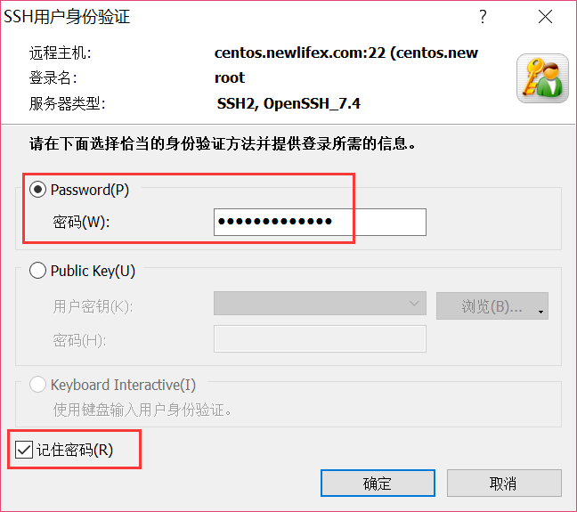
为了省事，我们同样选择记住密码。
确定后，我们可以看到登录成功！同时在左边会话管理器看到了刚才创建的这个连接，以后需要同时管理很多Linux服务器的时候，这样子就方便多了。
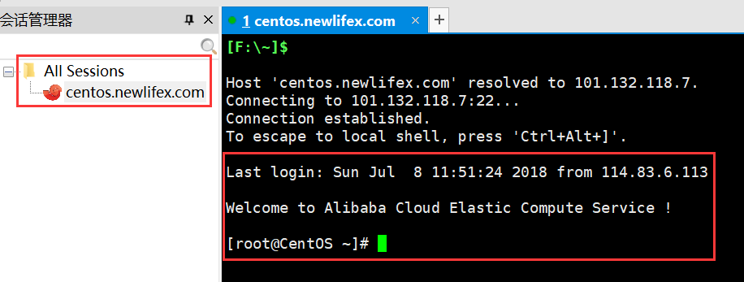
我来试试几个可能用得到的命令：
w 查看现在谁在连接这台服务器。下图看到只有我自己连着。
free -h 查看服务器内存使用情况。下图看到已用内存119M，Linux这点非常漂亮。
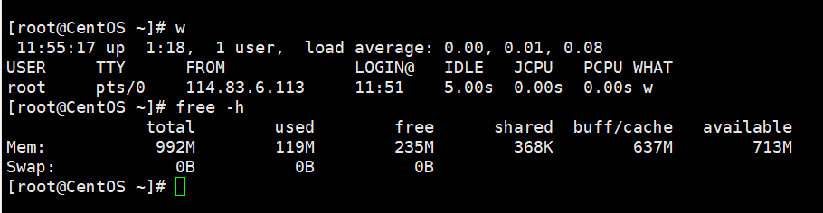
top 命令查看系统进程占用资源情况。类似于Windows任务管理器，定时刷新，按键Q退出。
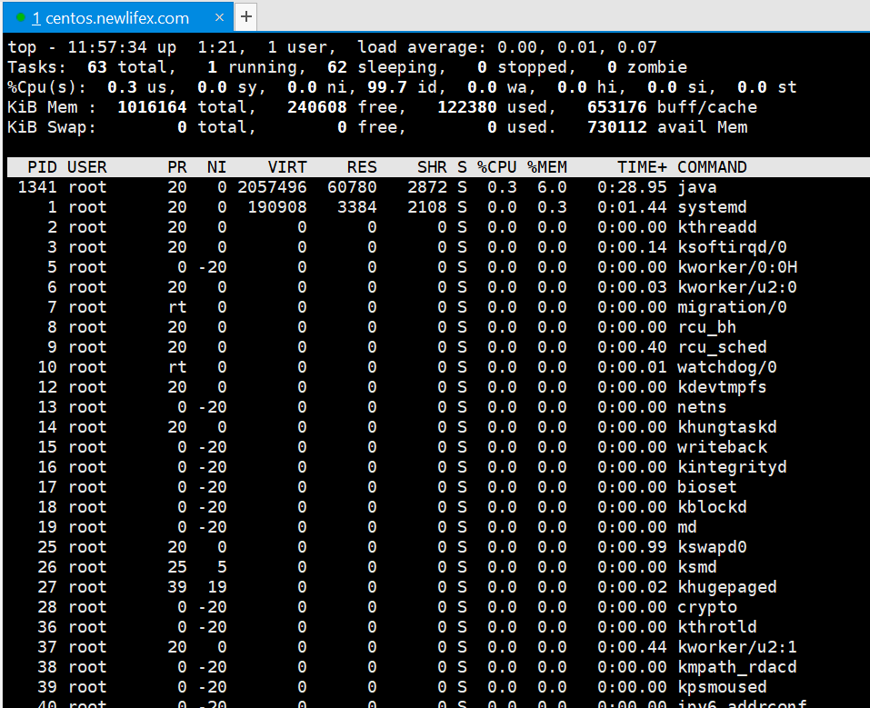
共63个进程，只有1个在运行，挺干净。不过底下看到有个java进程，不太爽，后面想办法干掉它。
ps aux 查看进程详细信息。
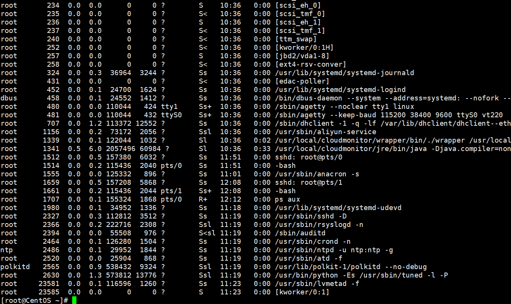
这下子知道，那个java进程来自 cloudmonitor，应该是云监控。
二、安装环境
我们是奔着.Net Core而来的，重点是安装运行时环境。
为了方便和一劳永逸，我们抄捷径，先看我的配置：
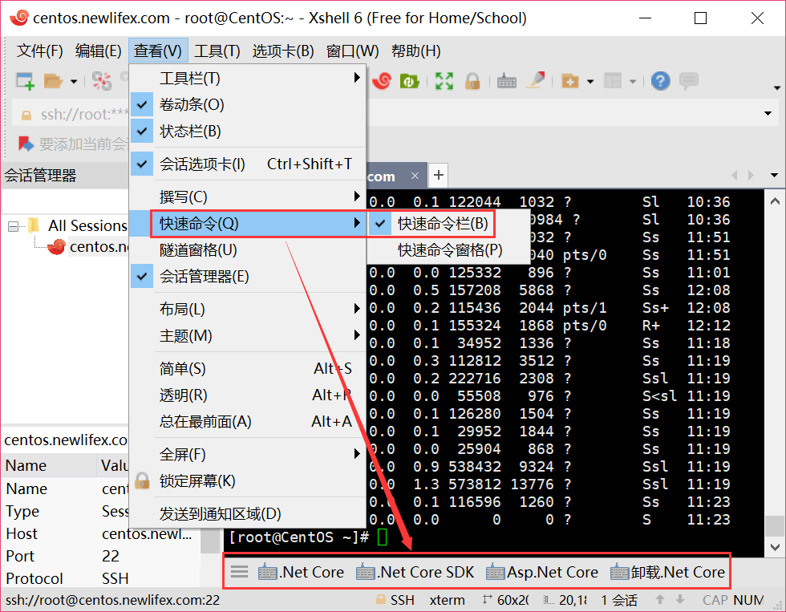
打开xshell的快速命令工具栏，然后添加几组快捷命令：
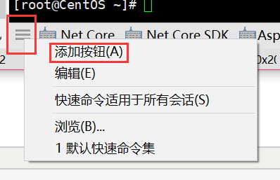
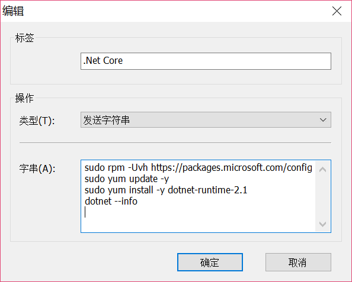
按钮“.Net Core”
sudo rpm -Uvh
https://packages.microsoft.com/config/rhel/7/packages-microsoft-prod.rpm
sudo yum update -y
sudo yum install -y dotnet-runtime-2.1
dotnet --info
（注意：最后一行命令后面必须有一个换行，否则最后命令无法得到执行，下同）
按钮“.Net Core SDK”
sudo rpm -Uvh
https://packages.microsoft.com/config/rhel/7/packages-microsoft-prod.rpm
sudo yum update -y
sudo yum install -y dotnet-sdk-2.1
dotnet --version
按钮“Asp.Net Core”
sudo rpm -Uvh
https://packages.microsoft.com/config/rhel/7/packages-microsoft-prod.rpm
sudo yum update -y
sudo yum install -y aspnetcore-runtime-2.1
dotnet --info
按钮“卸载.Net Core”
sudo yum remove -y aspnetcore-*
sudo yum remove -y dotnet-*
具体功能就不介绍了，来源于：https://www.microsoft.com/net/download/linux-package-manager/centos/sdk-current
我们试试第一个按钮，安装.net core运行时，没有asp.net core，也没有.net core sdk
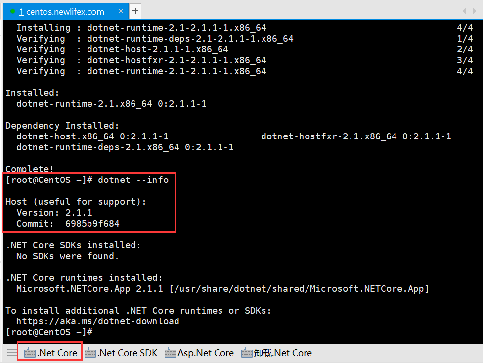
上图看到，安装了netcore运行时2.1.1
可以用卸载按钮，然后再装另外两个，看看有什么不同。
三、部署应用
用vs2017新建一个netcore控制台项目

Nuget引用 NewLife.Core ，建立一个稍微高级一点的例程
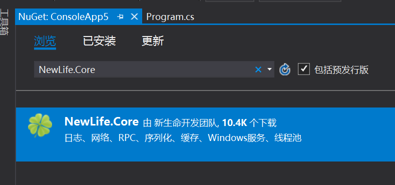

static void Main(String[] args)
{
XTrace.UseConsole();
var svr = new ApiServer(1234)
{
Log = XTrace.Log,
EncoderLog = XTrace.Log,
StatPeriod = 5
};
var ns = svr.EnsureCreate() as NetServer;
ns.SocketLog = XTrace.Log;
ns.SessionLog = XTrace.Log;
ns.LogSend = true;
ns.LogReceive = true;
svr.Start();
Console.ReadKey();
}
如上，我们用ApiServer建立一个RPC服务，并打开全部调试日志，它内置有两个服务接口很方便测试RPC通信。
编译并发布为可移植应用：
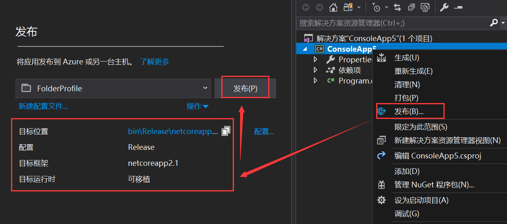
我们可以得到这样一个目录，运行必要的文件是dll和那个runtimeconfig.json
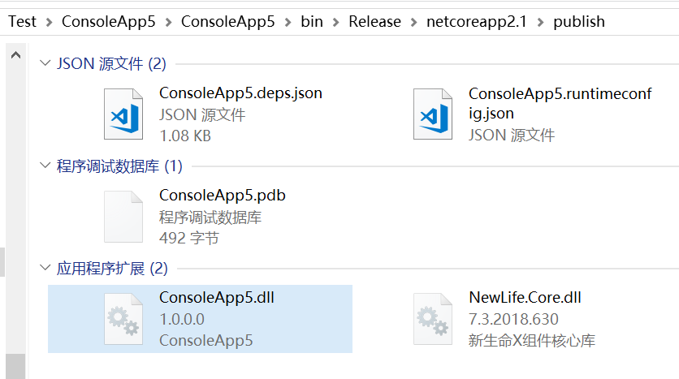
用xshell连上服务，我们这里可以是 centos.newlifex.com 。
xshell工具栏上有一个绿色图标，打开xftp，左窗口地址栏进入刚才的发布目录，右窗口新建/root/ApiServer目录，并把左边必要的文件拖到右边，即可实现上传！
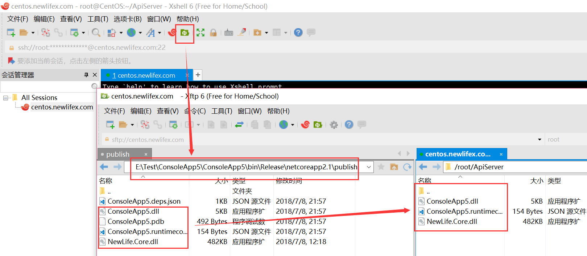
回到xshell中，cd ApiServer进入目录，dotnet ConsoleApp5.dll 即可执行应用，（前提是已安装netcore运行时）
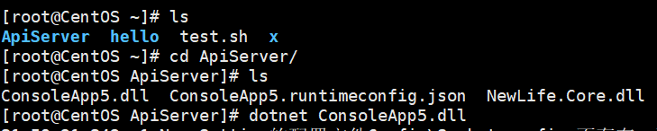
客户端用码神工具XCoder（https://github.com/NewLifeX/XCoder）连接地址 tcp://centos.newlifex.com:1234，选择 Api/All、Api/Info 两个服务接口均测试通过，表明我们的**.Net Core应用成功在CentOS**上跑起来
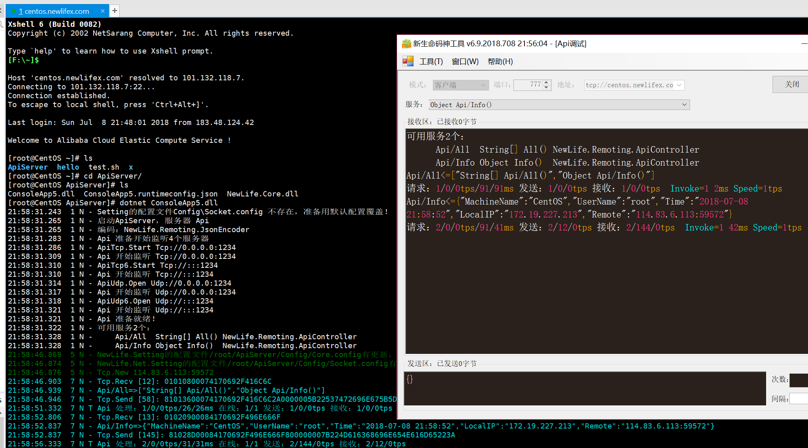
光有运行还不够，有时候我们还要查看应用工作日志。还是用xftp，刚才右边的窗口刷新一下，可以看到多出来Log目录，就是我们的应用日志，右键传输即可下载到本地，当然也可以简单直接的往左边拖过去。
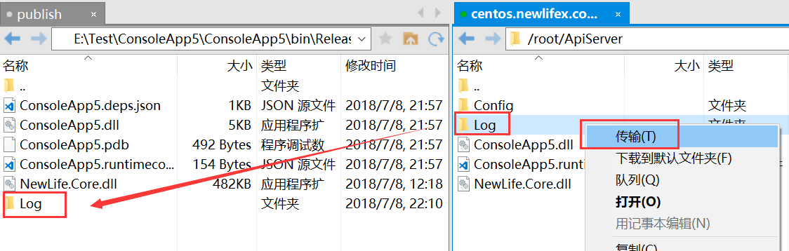
vscode打开日志文件，可以看到很详细的信息，特别是日志头，便于分析查找问题
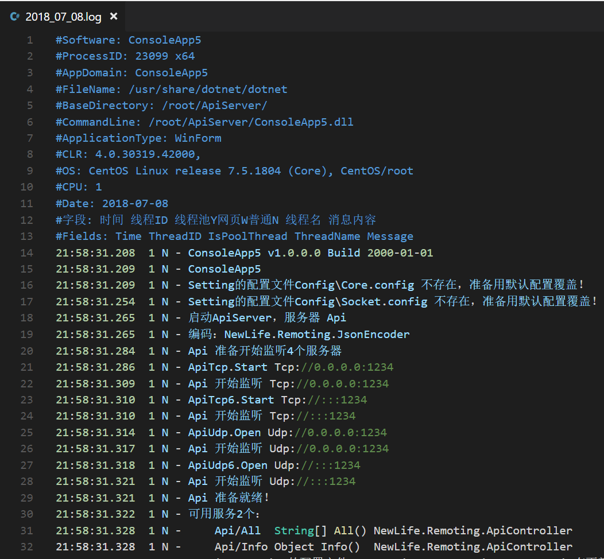
四、总结
这一篇面向Linux零基础的Windows工程师的极简教程，终于写完了，基本上足以应付八成以上的日常工作。
其它更多细节，可以在网上找到，比如怎么样把应用安装成为服务、怎么样做到开机启动，等等。
综合过去20年写代码的经验，netcore具有极强的优势，尽管有一些小问题，但我要说，只要微软不放弃，我坚决不放弃！
我是大石头，打1999年起，19年老码农。目前在快递行业从事数据分析架构工作，分析跑在路上的上亿包裹。欢迎大家一起C#大数据！
End.
我不相信神话，我只相信汗水！我不相信命运，我只相信双手！